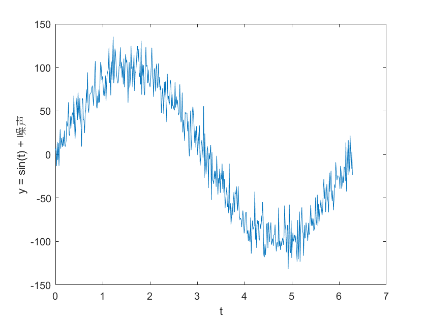

%数据的平滑处理 % y = smooth(y) % y = smooth(y,span) % y = smooth(y,method) % y = smooth(y,span,method) % y = smooth(y,'sgolay',degree) % y = smooth(y,span,'sgolay',degree) % y = smooth(x,y,...) clear; t = linspace(0,2*pi,500)'; y = 100*sin(t); noise = normrnd(0,15,500,1);%噪声产生，均值0，标准差15，500个数值 y = y + noise; figure; plot(t,y); xlabel('t') ylabel('y = sin(t) + 噪声'); % % yy1=smooth(y,30); % figure; % plot(t,y,'k:'); % hold on; % plot(t,yy1,'k','linewidth',3); % xlable('t'); % ylable('moving'); % legend('加噪波形','平滑后波形') % yy2=smooth(y,30,'lowess'); % figure; % plot(t,y,'k:'); % hold on; % plot(t,yy2,'k','linewidth',3); % xlable('t'); % ylable('lowess'); % legend('加噪波形','平滑后波形') % yy3=smooth(y,30,'rlowess'); % figure; % plot(t,y,'k:'); % hold on; % plot(t,yy3,'k','linewidth',3); % xlable('t'); % ylable('rlowess'); % legend('加噪波形','平滑后波形') % yy4=smooth(y,30,'loess'); % figure; % plot(t,y,'k:'); % hold on; % plot(t,yy4,'k','linewidth',3); % xlable('t'); % ylable('loess'); % legend('加噪波形','平滑后波形')